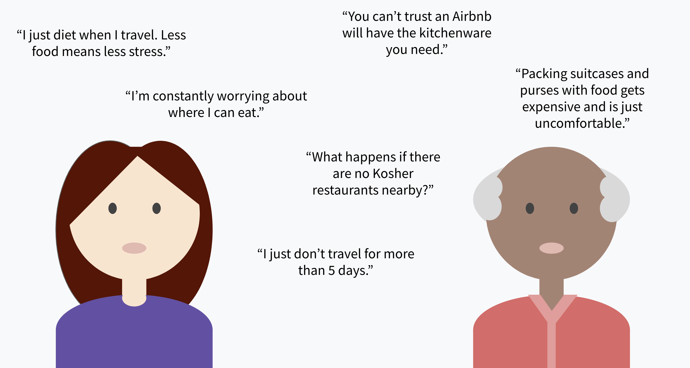
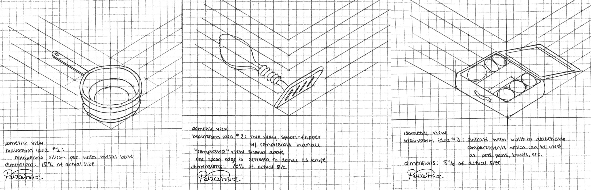
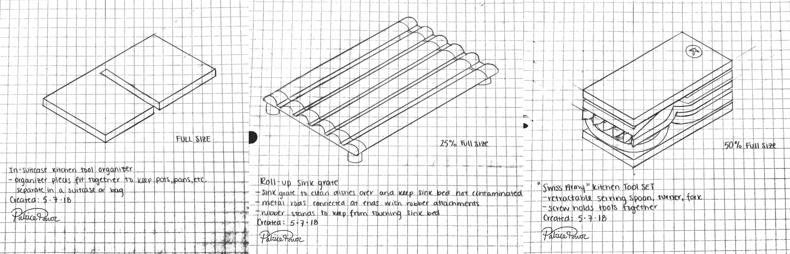

How can we make traveling easier for people who keep Kosher?
Keeping Kosher at home is realtively easy. Designated drawers and sinks make separating meat and dairy kitchenware very methodical. However, when Kashrut-observant individuals travel, meals get a lot more complicated.
Traveling to cities that are less kosher-accomodating means individuals must plan ahead for how they will eat.

"...I had to special-order kosher from a distant city."
-User interviews & observations, Spring 18
User Research & testing
Before conducting research, our team outlined questions we hoped to answer through background research, user research, and user testing:
- What is Kashrut?
- What makes traveling so difficult?
- What products already exist to help relieve travel stress or cost?
Initial research was conducted on Kashrut laws and current solutions so my team and I had a better understanding of our users and their experiences. User research, observation, and testing was then conducted in a number of ways:
- Observations and interviews of kosher kitchens on Northwestern University's campus
- Home visits and interviews with Orthodox Jewish families
- Phone interviews with rabbis and other individuals involved with Jewish organizations in Chicago
- Surveying more than 200 congregants of various synagogues in the Chicagoland area

Ideation
After consolidating our findings from the first rounds of research, we came up with the following requirements:
- Portability: The product must be lightweight, fit in carry-on luggage with ease, and pass all TSA travel regulations.
- Kitchen safety: The handle-head joint must be intuitive and should not interefere with use. Utensils should be color coded.
- Ease of use: The product must be lightweight, fit in carry-on luggage with ease, and pass all TSA travel regulations.
- Adherence to Kashrut: All materials used must be kasherable and nonporous. To allow for kashering of utensil set, all materials must maintain structural and function integrity under boiling water or high heat.
GOAL: Design a product that is lightweight and travel friendly which can assist Orthodox Jews in keeping kohser while using foreign kitchens.

Brainstorm sketches

Intermediate sketches

Final sketch
Final Product
The final design features a color coded universal handle which attaches to various utensil heads with a magnetic snap-in joint. This universal handle allows for a more compact fit in suitcases, while its lightweight kitchen-safe material minimizes added baggage weight without compromising on function.

3D printed snap-fit joint with embedded magnet